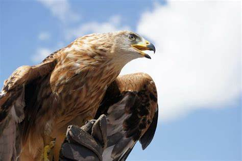
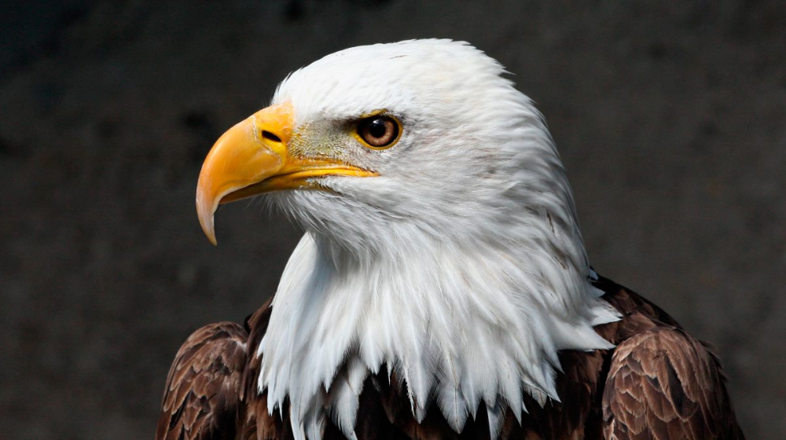
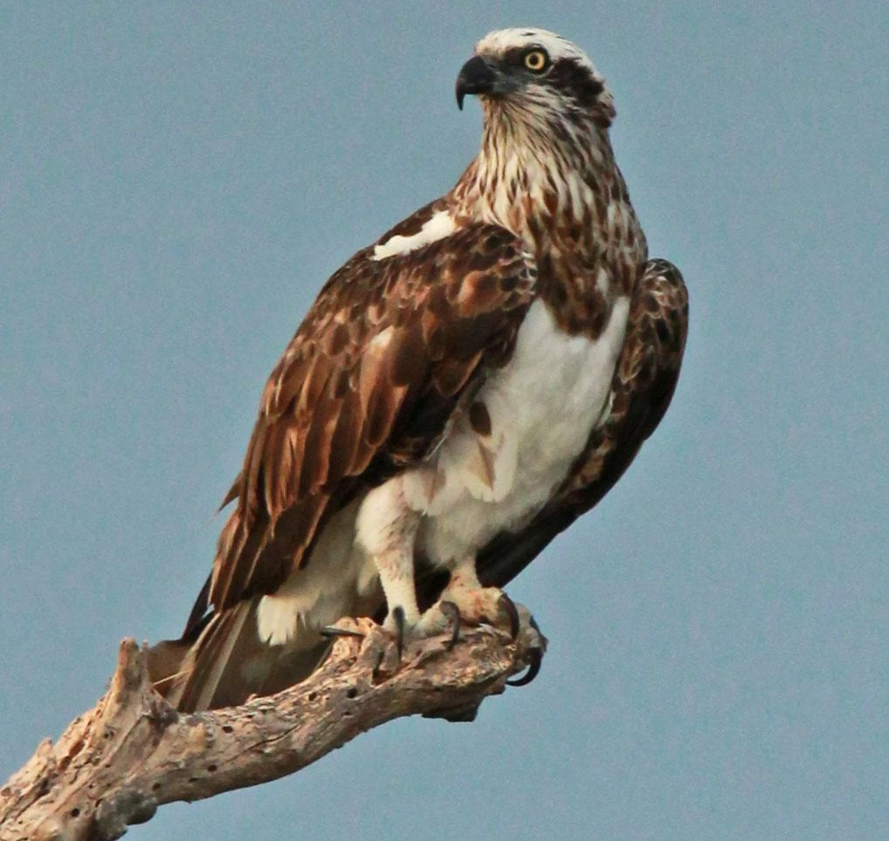

.jpg)


Las aves, fascinantes criaturas del reino animal, son un grupo diverso y extenso que habita prácticamente en todos los rincones del planeta. Con más de 10,000 especies identificadas, estas criaturas se distinguen por sus plumajes coloridos, la capacidad de volar -aunque no todas las especies tienen esta habilidad-, y su notable presencia en diversos ecosistemas. Desde los humedales hasta los desiertos, las aves juegan roles cruciales en la polinización, dispersión de semillas y control de plagas, contribuyendo significativamente al equilibrio ecológico. Este grupo incluye desde las diminutas colibríes hasta los majestuosos águilas, cada una adaptada de manera única a su entorno, lo que las convierte en un tema de estudio fascinante para ornitólogos y aficionados por igual.
Zacatecas, un estado situado en el norte de México, se caracteriza por su rica biodiversidad y variados ecosistemas, que van desde áridos desiertos hasta frondosos bosques. Esta diversidad de hábitats hace de Zacatecas un hogar para una impresionante variedad de aves, tanto residentes como migratorias. La región es un punto crucial en las rutas migratorias de muchas especies que viajan a través del continente, lo que permite observar una mezcla fascinante de avifauna en diferentes épocas del año. Entre los habitantes alados de Zacatecas, se encuentran especies adaptadas a la vida en zonas áridas, así como aquellas que prefieren los ambientes más húmedos y boscosos, ofreciendo una oportunidad única para el estudio y la observación de aves en el norte de México.
Las aves endémicas de Zacatecas representan un tesoro natural único, constituyendo un grupo selecto de especies que no se encuentran en ninguna otra parte del mundo. Estas aves, adaptadas a las condiciones específicas de los ecosistemas zacatecanos, son de especial interés para la conservación, ya que su bienestar está intrínsecamente ligado a la salud de sus hábitats locales. La preservación de estas especies endémicas es crucial no solo para mantener la biodiversidad de Zacatecas, sino también para proteger el patrimonio natural de México. Estudiar estas aves ofrece insights valiosos sobre la evolución, adaptación y conservación, resaltando la importancia de esfuerzos de conservación enfocados en proteger los hábitats naturales frente a amenazas como la urbanización y el cambio climático.
(Aquila chrysaetos)
El águila real es una de las aves rapaces más conocidas y ampliamente distribuidas del hemisferio norte.
Se caracteriza por su tamaño impresionante, con una envergadura que puede superar los 2 metros, y su plumaje dorado en la nuca, que le da el nombre.
Estas aves son excelentes cazadoras, alimentándose principalmente de mamíferos medianos como conejos, ardillas y, ocasionalmente, otros pájaros y reptiles.
El águila real es un símbolo de fuerza y libertad, presente en mitologías, escudos y banderas de diversas culturas y países.
(Pandion haliaetus)
El águila pescadora, también conocida como osprey, es una especie que se encuentra en casi todas las regiones del mundo, especialmente cerca de cuerpos de agua dulce y salada, donde hay abundancia de peces, su principal fuente de alimentación.
Esta ave se distingue por su habilidad única de bucear para capturar peces con sus garras afiladas.
Tiene una envergadura de aproximadamente 1.5 a 1.8 metros y es fácilmente reconocible por su plumaje mayormente marrón en la parte superior y blanco en la parte inferior, con una máscara negra a través de los ojos.
(Haliaeetus leucocephalus)
El águila calva es un símbolo nacional de los Estados Unidos, conocida por su distintiva cabeza blanca y cola blanca que contrastan con el cuerpo y alas marrón oscuro.
A pesar de su nombre, el águila calva no es realmente calva; su nombre proviene de una antigua definición de "blanco" en inglés.
Esta especie, con una envergadura que puede alcanzar hasta 2.3 metros, habita principalmente en América del Norte, prefiriendo los hábitats cerca de ríos, lagos y costas donde puede encontrar peces, su alimento preferido.